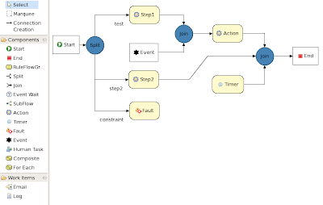
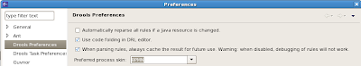

Drools Flow and BPMN
One of the main things we want to offer to end users is the ability to specify themselves what their processes look like. This includes the ability to extend the process engine with custom-defined nodes, to add domain-specific work items, etc. We now have introduced the concept of a (process) skin, which controls how the different nodes are visualized. This allows you to change the visualization of the different node types the way you like them (by implementing your own SkinProvider).
BPMN is a popular language used by business users for modeling business processes. BPMN defines terminology, different types of nodes, how these should be visualized, etc. People who are familiar with BPMN might find it easier to implement an executable process (possibly based on a BPMN process diagram) using a similar visualization. We have therefore created a BPMN skin that maps the Drools Flow concepts to the equivalent BPMN visualization.
For example, the following figure shows a process using some of the different types of nodes in the RuleFlow language using the default skin …

Simply by switching the preferred process skin in the Drools preferences …

and then reopening the editor shows the same process using the BPMN skin …
Tell us what you like! Or more in general, let us know what you think the other features are that are important when deciding how to visualize (executable) business processes (as flow charts).

{kind=link}
{kind=link}
{kind=link}